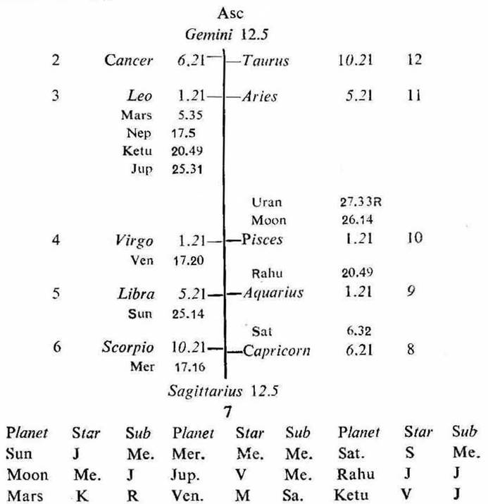

Male. Birth 10-11-1932 Thursday; 9-0 p.m. I.S.T; 23°N2', 72°E 35; Ayanamsa 22° 49'.

If the cuspal sub lord of 3 or 12 be the significator of 3 or 12 and connected with 10, the native if in service, will get transferred from the present place to another place during the joint period of the significators of 3, 10 and 12.
3rd cusp. The sub lord of the 3rd cusp is Venus. It owns 12; its star lord Moon is in 10 and aspected by the owner of 12 (Venus); its sub lord Saturn (being in the star Sun owning 3) is the significator of 3. So the cuspal sub lord of 3 (Venus) is the significator of 10, 12 and connected with 3 and 12.
12th cusp. The sub lord of the 12th cusp is Moon. It is in 10; its star lord Mercury is in 6 and aspects the 12th and aspected by the occupant of 3 (Mars); its sub lord Jupiter owns 10 and occupies 3. So the cuspal sub lord of 12 (Moon) is the significator of 6, 12, 3 and connected with 3 and 10.
10th cusp. The sub lord of the 10th cusp is Rahu. It is in the star and sub Jupiter owning 10 and occupying 3. So the cuspal sub lord of 10 (Rahu) is the significator of 3, 10 and connected with 3 and 10.
The native was born during the period of Mercury with balance of 4Y 9M 19D. So he has to pass the periods of Ketu, Venus, Sun, Moon and so on.
The periods of Mercury, Ketu and Venus were passed in early years of life. He started his career during the period of Sun (29-8-1964 to 29-8-1970). Sun is not among the cuspal sub lords of 3, 10 and 12.
Then starts the period of Moon (29-8-1970 to 29-8-1980). Moon, Rahu and Venus are the cuspal sub lords of 12, 10 and 3 respectively. They are the significators of and connected with 3, 10 and 12.
The native is an officer in the Bank at Ahmedabed. Now in the period of Moon, the sub period of Rahu will start earlier than Venus (29-1-1972 to 29-7-1973). So during the period of Moon, in the sub period of Rahu and in the inter period of Venus (16-1-1973 to 16-4-1973), he will be transferred to some other city. Actually he was transferred to the Bombay office in the month of March 1973.
He took charge in the Bombay office on 15-3-1973. On that day Sun was transitting in Pisces 1° 0' on the cusp of the 10th; Moon in Cancer 13° 0' in the sub Rahu (the sub period ruler) and it was in sextile to the 12th cusp as well as the owner 12 (Venus- change of place in new environments); Rahu in Sagittarius 20° 0' in the star Venus (the inter period ruler); and Venus was in Aquarius 24° 21' in the 9th in trine to Sun owning 3 (change of place).